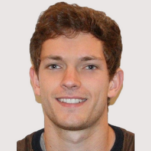

Timeline
This timeline shows my educational background, my degrees and my work experiences starting from my high school degree
-
July 2012
Scientific High School Diploma
I've been graduated from High School with First Class Honours (18,23/20) and European Mention.
-
September 2012
Engineering School
The first two years at National Institute of Applied Sciences of Rennes are dedicated to general topics and background skills. In September 2014 I joined the Telecommunications Department in which various specific topics are taught.
-
June - August 2013
R&D Technician intern
This internship was aimed at testing and validating different kinds of counting sensors (piezoelectric, pyroelectric, magnetic loop) for various applications (pedestrians, horsemen, cyclists, bikers, motorists). Another purpose was to characterize the efficiency of shadows treatment algorithms. This first nine-week experience in an engineering context was for sure helpful in understanding companies issues and in orienting my professionnal project.
-
August 2014/2017
Seasonal employee
This summer job in a bank establishment was an opportunity to get used to customer service and its level of responsibility. I was also in charge of bringing proxies into line.
-
June - August 2015
Engineer intern
During this 3-month internship I studied the feasibility and started the implementation of a test bench automation for pulsed optical products using Matlab and different electrical and optical measuring instruments. I also designed and realized a PCB with Altium for the automation of PCB entry control. The various tasks I was given made this internship really interesting and beneficial from all points of view.
-
May 2016
TOEIC : English Certificate
In May 2016 I obtained 975/990pts to the Learning & Reading TOEIC test which corresponds to a C1 level according to the Common European Framework of Reference for Languages (CEFRL).
-
June - September 2016
Engineer intern
This 4-month internship was aimed at measuring throughput on FTTH GPON architecture trying to reduce the methods' intrusive nature and impact on the network load. After learning about the state of the art on the topic (flooding/probing), I've made various measuring campaigns. This was a chance to get used to different optical equipments of this network architecture (ONT, Coupler, OLT), several measuring equipments (TAP, GigaStor) and some software tools (Wireshark, SpeedService, Iperf). I've also investigated the behaviour of these measurements reducing the test duration with different users' profiles and simulating different TCP cross traffic settings. The final step was to design an algorithm, to test it and to improve its performance and reliability. I learnt a lot of new theoretical/practical concepts, I enjoyed so much!
-
October 2017
Master of Science program
I enrolled at Politecnico di Milano as a double degree student which basically means substituting the last year of the engineering program at INSA Rennes with a 2-year 100% english taught Master of Science in Telecommunications. This international experience was my last academic challenge before starting my professionnal career. Discovering and getting adapted to a new country, new culture, attenting english taught courses on thrilling topics, meeting people from all over the world and travelling are very beneficial!

-
March - August 2018
Research Engineer intern
Through this 6-month internship, which also counted as my master thesis, I studied deeply a state-of-the-art wireless communication technology related to 5G: massive MIMO systems. My main activity was to challenge the plane wave model assumption using different approaches: in particular characterizing the trade-off model accuracy versus channel estimation complexity. Starting from highlighting the lacks of the literature moving on to the channel physical models analysis towards the channel estimation study, both my theoretical studies and Python simulations have contributed to the laboratory's research activities. A major contribution is the study of efficient channel estimation algorithms taking into account spherical waves. This internship allowed me to get familiar with the research environment and to understand its freedoms and constraints. Being surrounded by experts was very instructive and beneficial: a scientific paper and a patent are the outcome of the internship. Both a technical and human successful experience !
-
October 2018
SEE Regional Price Award
I got awarded the SEE Regional Price for my internship activities within the Network Interfaces laboratory of b<>com. It is very satisfying both for the research institute and I !
-
October 2018 - ...
Telecommunications Engineer
Orange Graduate Program
In October 2018 I got hired by Orange. In particular I enrolled in the Orange Graduate Program: it consists in occupying 3 different positions in the first 5 years. My first position is Data Analyst within Orange Business Services in Petropolis (Brazil), that's a really exciting experience !
-
. . .